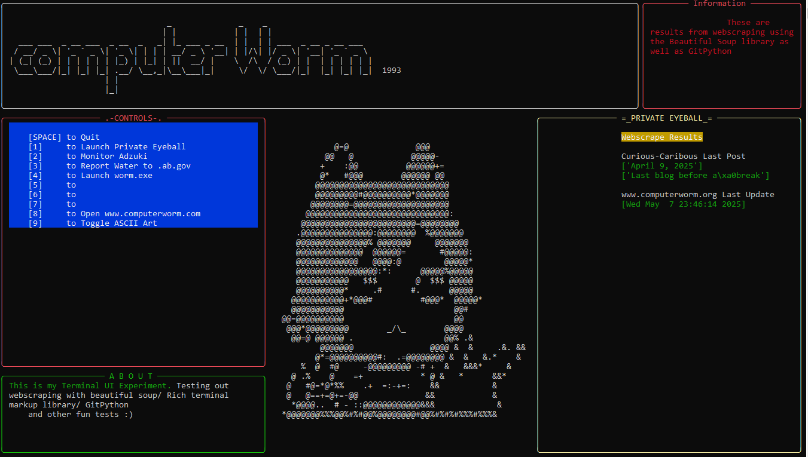

Captains Log 0005
May 11, 2025
Terminal ASCII Art and Logos
Found a pretty nifty website for converting images into text based ASCII Art. You can even choose what sort of symbols [Alphabet, Alphanumeric, Numerals only etc etc.] It's fun to mess about with, however it isnt perfect. But it will do the brunt workload of it and then you can copy paste into a text document and edit it to fix it up a bit if you want. I used it here for this webscraping project I've been playing with. Beilding a Terminal UI with the "Rich" library and webscraping with "Beautiful Soup". Eventualy I'll build my rewrite of my water reporting into this as well and maybe just use it as a main controller for my other programs too. Anyways here is the base image I used and here it is within my program. I call it ScrapedKnee3000
I tried a few images and this one turned out the best. You have to take into consideration how many characters wide your image can be. Within my Terminal I only had space for 50 so it was rather limiting. It's the character Izutsumi from Dungeon Meshi, which is a great show if you haven't seen it.
I think it turned out really cool looking. Heres the link if anyone is curious to try it out themselves. Anyways learning how to webscrape has been fun, right now I just have it scrape 2 websites. My friends blog to check last post and then This website to check when it was last updated. Actually checking my website isn't
done with webscraping since the source code is on my pc I just used GitPython to check the date when my last git commit/push was. When I flesh out this program a bit more I'll write more
and add it to my projects list on the main page of the site